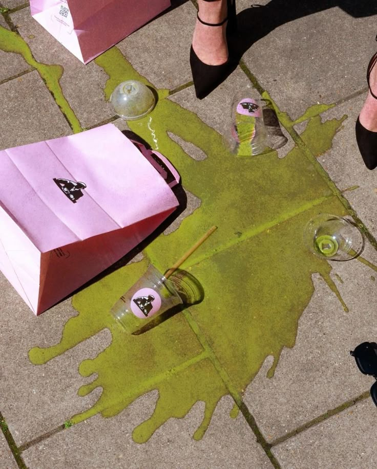
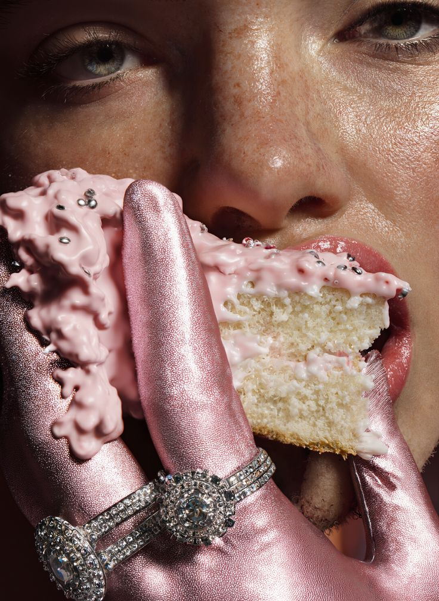
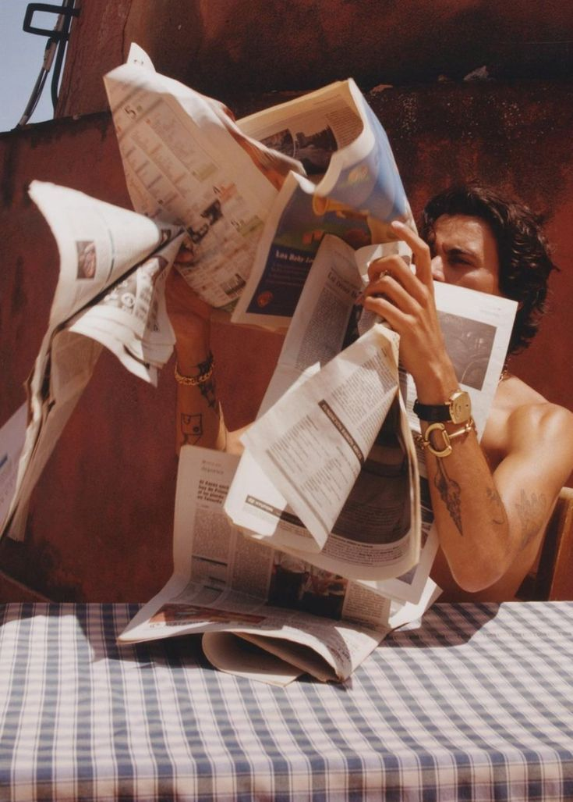

Moralinizi Kim Bozdu?
Ruh hâliniz şehirle ilişki kurma biçiminizi nasıl belirliyor? İçsel durumun dış dünyayı nasıl şekillendirdiğini keşfedin.
Yazıyı OkuUykusuzluğun Psikosomatiği
Uykusuzluğun ardındaki zihinsel çatışmalar ve duygusal yükler...
Yazıyı Oku

Güzel Olmak İçin Kişiliğiniz Üzerinde Çalışmanız Gerekir
Gerçek güzelliğin içsel nezaketle nasıl şekillendiğini keşfedin.
Yazıyı OkuBir İnsanın Kendisi Olamamasının 10 Nedeni
Kişiyi kendisi olmaktan alıkoyan görünmez psikolojik engeller ve..
Yazıyı Oku

Psikolojide Uyum (Congruence)
Kişinin düşünce–duygu–davranış uyumu ve benlik bütünlüğü.
Yazıyı Oku